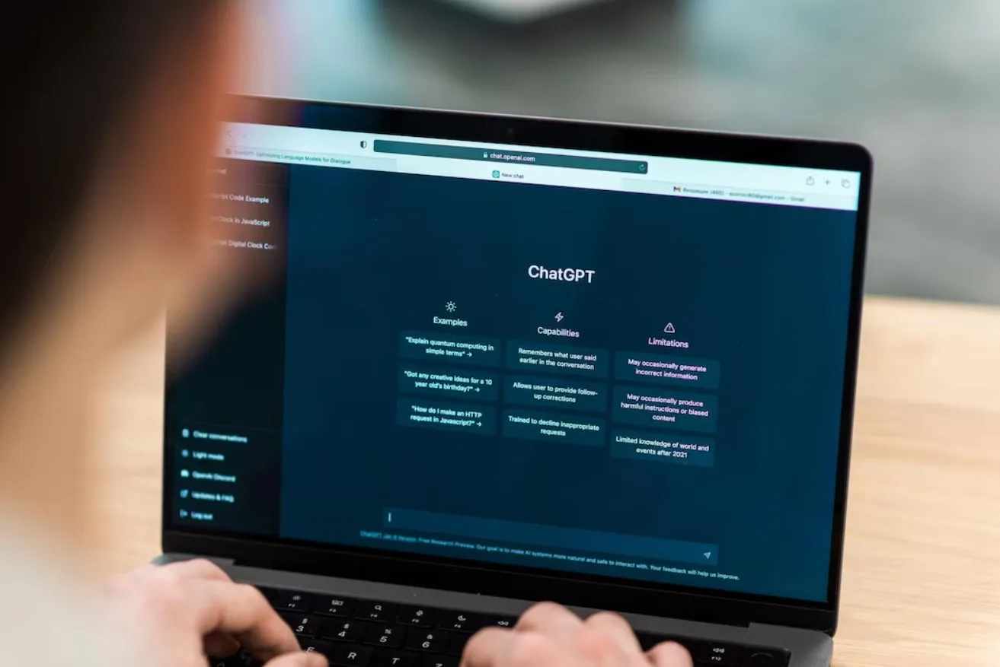

ChatGPT: Como a Ferramenta Está Transformando o Marketing Digital
O marketing digital está em constante evolução, adaptando-se a novas tecnologias e tendências que
surgem com
frequência. Entre as inovações mais impactantes dos últimos anos está a inteligência artificial (IA), com
destaque para o ChatGPT, uma ferramenta baseada em linguagem natural criada pela OpenAI.
Lançado em 2020 e aprimorado continuamente, o ChatGPT transformou a forma como empresas e profissionais de
marketing se relacionam com o público, produzem conteúdo, otimizam campanhas e oferecem atendimento ao cliente.
Este artigo explora como o ChatGPT está revolucionando o marketing digital, apresentando os benefícios de sua
aplicação em áreas como geração de conteúdo, personalização de atendimento, análise de dados e automação de
processos.
Se você busca entender o potencial dessa tecnologia para sua estratégia de marketing digital, continue a leitura
e descubra como ela pode fazer a diferença para o seu negócio.

O que é ChatGPT e como ele funciona?
O ChatGPT é um modelo de linguagem natural desenvolvido pela OpenAI, que utiliza IA para processar,
gerar e entender textos de maneira avançada.
Baseado em redes neurais treinadas com grandes volumes de dados textuais, a ferramenta é capaz de interpretar
perguntas e gerar respostas coerentes, fluídas e com tom natural, como se fosse uma pessoa.
O modelo tem sido utilizado em diversas áreas, e o marketing digital é uma das que mais tem se beneficiado de
suas funcionalidades.
Com a capacidade de gerar conteúdos personalizados e atender a uma grande variedade de demandas textuais, a
tecnologia baseada em inteligência artificial oferece novas possibilidades para marcas e profissionais de
marketing que desejam maximizar sua presença digital de forma escalável e eficiente.
Além disso, segundo a OpenAI, o ChatGPT pode ser integrado a diversas plataformas, incluindo sites, redes
sociais e sistemas de atendimento ao cliente, o que expande ainda mais suas possibilidades de uso no marketing
digital.